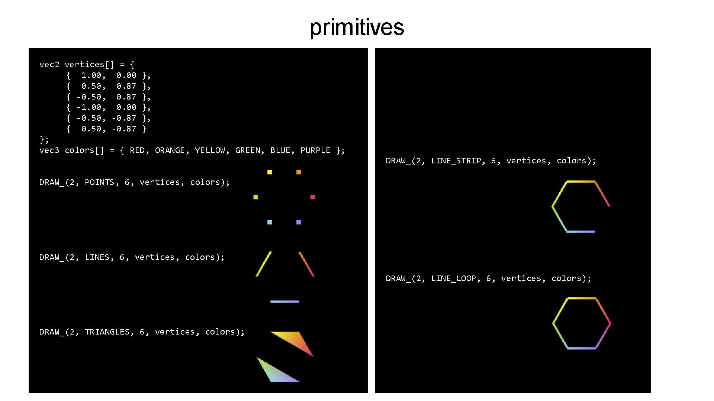
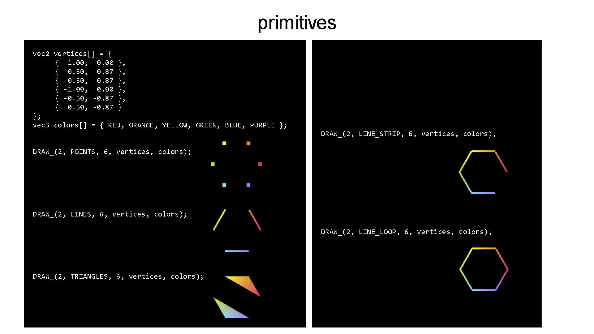

James Bern
Postdoctoral Associate
MIT CSAIL
Distributed Robotics Lab
jamesmbern@gmail.com
he / him / his
Research: Soft-Rigid Robot Design, Modeling, and Control
I work at the intersection of computer graphics and robotics. My research leverages differentiable simulation and numerical optimization to design, model, and control the next generation of soft-rigid robots.
google scholar
DRAW_(ROBOTS): Data-oriented intro to the computer graphics × robotics
This is a mini class (slides, code, and assignments) to help undergraduate researchers pick up the practical skills required to do novel research at the intersection of computer graphics and robotics.
 

click to enlarge sample slides
Optimization Cheat Sheet
Notation: U_x = dU / dx, U_xx = d2U / dx2.
Gradient descent: The first order Taylor expansion of the energy
Newton's method: The first order Taylor expansion of the gradient
Direct sensitivity analysis: The total derivative of constraint